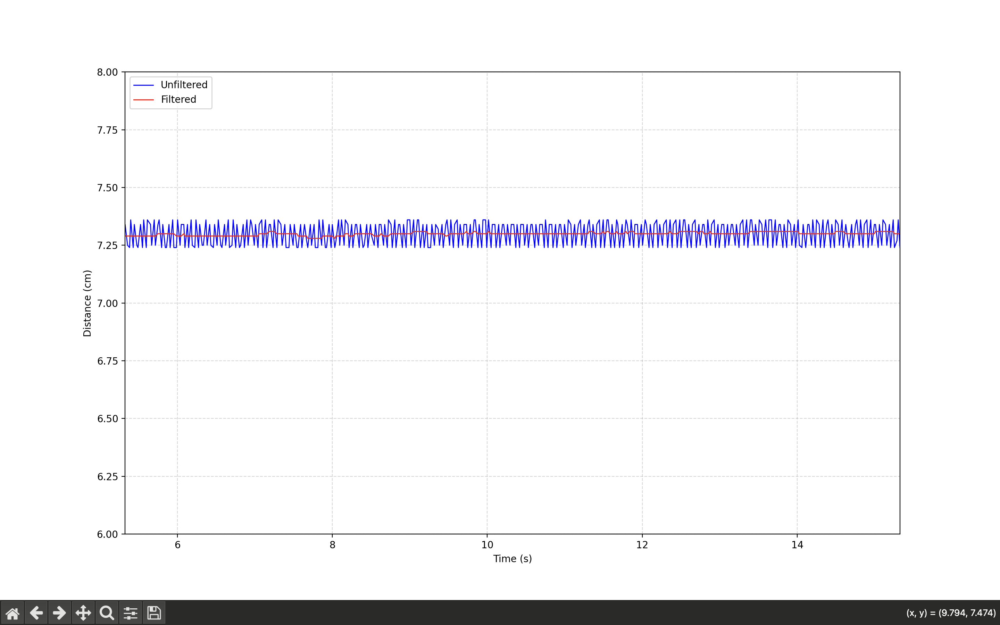
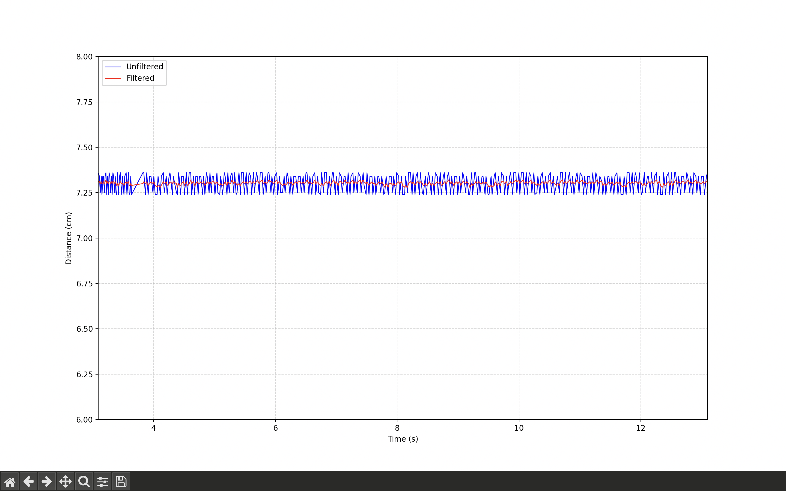
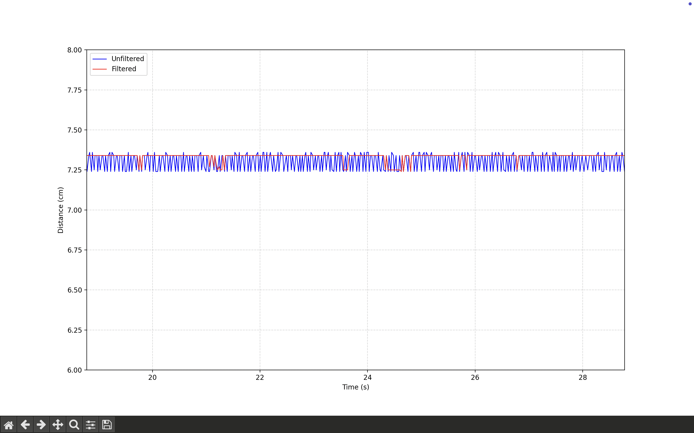

Objectives
Low-cost sensors like the HC-SR04 ultrasonic sensor are accessible and easy to use, but often their raw readings are prone to noise and spikes/outliers. Taking raw, unfiltered signals from these devices can have negative consequences when used in larger systems.
The purpose of this project was to create a modular set of classes for a few digital filters that can be reused in future projects. These were a simple moving average (SMA), exponential moving average (EMA), and median filter. To demonstrate these filters and check the classes are working as intended, I aimed to improve the accuracy of an HC-SR04 ultrasound sensor.
Implementation
The hardware used was minimal, just an HC-SR04 ultrasound sensor and an Arduino Nano. Separate classes were created for each filter.
To show the filters in action, I created a Python script to plot the filtered and unfiltered data in real time and to calculate metrics such as SNR and standard deviation. An object was placed at a set distance, and the raw unfiltered signal was analysed. Then I added each of the filters in turn.
Filters
Simple Moving Average (SMA)
This filter smooths data by averaging a set number of previous measurements within a defined window size. This helps with noise reduction and is simple to implement. However, large window sizes can introduce significant delay to the signal.
| Metric | Unfiltered | k = 5 | k = 10 | k = 15 |
|---|---|---|---|---|
| Standard Deviation (cm) | 0.05 | 0.01 | 0.01 | 0.01 |
| Peak-to-Peak (cm) | 0.12 | 0.05 | 0.03 | 0.03 |
| SNR | 139 | 881 | 1054 | 1078 |
The SMA filter clearly was effective in noise reduction, the standard deviation of the signal fell from 0.05 cm to 0.01 cm, and the signal-to-noise ratio improved nearly 8x. The SMA seems optimal for this task, despite its simple implementation.
Exponential Moving Average (EMA)
This filter smooths data by applying a weighted average where recent measurements are given more weighting than older ones. This weighting is controlled by a smoothing parameter alpha. Small alpha produces stronger smoothing but more lag, large alpha means less smoothing but less lag.
| Metric | Unfiltered | alpha = 0.2 | alpha = 0.5 | alpha = 0.8 |
|---|---|---|---|---|
| Standard Deviation (cm) | 0.05 | 0.01 | 0.02 | 0.04 |
| Peak-to-Peak (cm) | 0.12 | 0.04 | 0.08 | 0.11 |
| SNR | 139 | 814 | 345 | 195 |
The EMA filter was also effective in noise reduction, and the difference in effect for different alpha values is clear. For example with alpha = 0.8, the SNR was only improved by 40%, but with a much lower alpha of 0.2 there is more smoothing and the SNR improves nearly 6x. Tuning is needed to find the best value of alpha that doesnt introduce too much lag to the system.
Median Filter
This filter smooths data by sorting a window of n recent measurements and taking the median value as the output. It is highly effective at rejecting outliers, but large window sizes (n) can cause delay in the response.
The median filter is best for outlier rejection, making it suitable for sensors prone to sudden spikes. However it didn't improve the SNR as much as the SMA or EMA. Maybe a different demonstration/experiment would be better suited to show this filter.
| Metric | Unfiltered | n = 5 | n = 9 | n = 13 |
|---|---|---|---|---|
| Standard Deviation (cm) | 0.05 | 0.03 | 0.04 | 0.02 |
| Peak-to-Peak (cm) | 0.12 | 0.12 | 0.12 | 0.11 |
| SNR | 139 | 274 | 330 | 399 |
Conclusion and Future Work
All three filters significantly improved measurement stability. Overall I think the best way to effectively process these signals would be to pass them through the median filter first, in order to reject outliers/sudden disturbances, and then apply a Simple Moving Average, to smooth out noise. As these filters are lightweight and not computationally intensive, this would work well in embedded systems applications. Future work on this project will involve creating more advanced filters, such as a Kalman filter, testing these filters with different sensors, and applying them in a closed-loop control system.
Source Code
The full implementation, including Arduino classes and Python script, is on the GitHub repository below:
View on GitHub